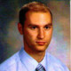
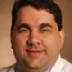

Nous apprenons de médecine les plus brillants.
Tableau Médicale
Exemples.
-
Peter E Alperin, MD
San Francisco, CA
Internal Medicine
Vice President of MedicineArchimedes, Inc.
-
Elise Brett, MD
New York, NY
Endocrinology
Associate Clinical ProfessorMount Sinai School of Medicine
-
Barry Chaiken, MD, MPH
Boston, MA
Family Medicine
Chief Medical OfficerDocsNetwork, Ltd.
-
Lawrence Chin, MD
Syracuse, NY
Neurosurgery
Chair, Department of NeurosurgerySUNY Upstate
-
Brad Cohn, MD
San Francisco, CA
Anesthesiology
Resident PhysicianUCSF Medical Center
-
Alexander Ding, MD
Boston, MA
Radiology
Chief Fellow in Interventional RadiologyMGH

Sharon S Drost, MD
Los Altos, CA
Neurology
Member, Board of GovernorsStanford Univ. Medical Center Alumni Assoc.

Todd Ferris, MD
Menlo Park, CA
Family Medicine
Associate CIOStanford University School of Medicine
-
Harvey Fishman, MD, PhD
Palo Alto, CA
Ophthalmology
Founder, FishmanVision and Co-founderMobileD
-
Alan R Greene, MD
Palo Alto, CA
Pediatrics
Clinical ProfessorStanford University School of Medicine
-
Robert Harvey, MD, MBA
San Francisco, CA
Plastic Surgery
Chairman, Department of SurgerySt. Francis Memorial Hospital
-
Natalie Hodge, MD
Paducah, KY
Pediatrics
Founder and Chief Health OfficerPersonal Medicine Inc.
-
Frederick Hofheinz, MD, MBA
Bedford, MA
Internal Medicine
Chief Medical Information OfficerIntelligent Medical Objects

Vikas Jain, MD
Palo Alto, CA
Family Medicine
Sleep Medicine FellowStanford Hospital and Clinics
-
Leslie Kardos, MD
San Francisco, CA
OB/GYN
Chief of GynecologyCalifornia Pacific Medical Center
-
Joseph Kim, MD, MPH
Newton, PA
Internal Medicine
PresidentMedical Communications Media, Inc.
-
Daniel Kraft, MD
Stanford, CA
Pediatrics / IM
Chair, Medicine TrackSingularity University

Leslie Lenert, MD
Salt Lake City, UT
Internal Medicine
Former DirectorNational Ctr for Public Health Informatics, CDC
-
Irving Loh, MD
Thousand Oaks, CA
Cardiology
DirectorVentura Heart Institute
-
Christopher Longhurst, MD
Palo Alto, CA
Pediatrics
CMIOLucile Packard Children's Hospital, Stanford

Rafael Lugo, MD
Houston, TX
Surgery
General SurgeonMethodist Hospital Physician Organization
-
Howard Luks, MD
Hawthorne, NY
Orthopaedic Surgery
Chief of Sports MedicineUniversity Orthopedics, PC

Lawrence Lustig, MD
San Francisco, CA
Otolaryngology
Francis A Sooy, MD Endowed Chair in OHNS UCSF
-
Michael Nierenberg, MD
Palo Alto, CA
Internal Medicine
Clinical Professor of Medicine, EmeritusStanford University

Connie Price, MD
Denver, CO
Pediatrics
Chief, Infectious DiseaseDenver Health Medical Center

Mark Price, MD, PhD
Worcester, MA
Orthopedic Surgery
Assistant ProfessorUniversity of Mass Medical School

Sanjay Saint, MD, MPH
San Francisco, CA
Internal Medicine
Professor, Department of MedicineUniversity of Michigan

Peter Schalock, MD
Boston, MA
Dermatology
Assistant Prof. of DermatologyHarvard Medical School

Nancy Shadick, MD, MPH
Boston, MA
Rheumatology
Assistant Professor of MedicineHarvard Medical School
-
Joshua A Schwimmer, MD, FACP, FASN
New York, NY
Nephrology
NephrologistLenox Hill Hospital and The Mount Sinai Hospital
-
Jordan Shlain, MD
San Francisco, CA
Internal Medicine
Medical DirectorCurrent Health Medical Group

Joseph Sirven, MD
Phoenix, AZ
Neurology
Chairman, Department of NeurologyMayo Clinic in Arizona

Lauren Stegman, MD, PhD
Phoenix, AZ
Radiation Oncology
Managing PartnerRadiation Oncologists of Central Arizona
-
Neil Stollman, MD
Oakland, CA
Gastroenterology
Associate Clinical Professor of MedicineUCSF

E Rand Sutherland, MD, MPH
Denver, CO
Pulmonology
Chief, Pulmonary & Critical CareNational Jewish Medical Center
-
Wendy Sue Swanson, MD
Everett, WA
Pediatrics
Community Pediatrician
and Physician Writer -
Pierre Theodore, MD
San Francisco, CA
Thoracic Surgery
Van Auken Endowed Chair in Thoracic Surgery UCSF
-
Michael Thompson, MD, PhD
Milwaukee, WI
Oncology
Medical DirectorEarly Cancer Research Program
-
Lawrence Tierney, MD
San Francisco, CA
Internal Medicine
Professor in ResidenceUCSF School of Medicine

David Toub, MD, MBA
Wyncote, PA
Obstetrics & Gynecology
Medical DirectorGynesonics, Inc.
-
Paul Turek, MD
San Francisco, CA
Urology
Former Endowed Chair Professor of Urology UCSF
-
Bryan Vartabedian, MD
The Woodlands, TX
Pediatrics
Assistant Professor of PediatricsBaylor College of Medicine

Lewis Wexler, MD
Menlo Park, CA
Radiology
Emeritus Professor of RadiologyStanford Medical School
-
Charlotte Wills, MD
Oakland, CA
Emergency Medicine
Associate Residency DirectorHighland Emergency Medicine

Felasfa M Wodajo, MD
Arlington, VA
Orthopaedic Surgery
Medical Director, Musculoskeletal OncologyVirginia Hospital Center
Doximity Fellows
Our Fellows are an elite group of leaders in medical literature and technology from top institutions -- and the driving force behind thousands of virtual clinical conversations on the Doximity platform.
Fall 2013

Riley Alexander
Pathology
ResidentIndiana University School of Medicine
-
Anand Allam
Physical Medicine & Rehabilitation / Spinal Cord Injury Medicine
Assistant ProfessorUT Health Science Center
-
Nassir Azimi
Cardiology
Interventional CardiologistSharp Grossmont Hospital
-
David Banach
Infectious Diseases
Assistant ProfessorYale School of Medicine
-
Dipanjan Banerjee
Cardiology
Clinical Assistant ProfessorStanford University
-
Adam Bloomfield
Pediatrics
MD / Managing PartnerChestnut Ridge Pediatric Associates

Brian Brodwater
Radiology
Senior Partner / Assistant ProfessorDelaney Radiologists / UNC

Salim Chahin
Neurology / Multiple Sclerosis
FellowUniversity of Pennsylvania
-
Daniel Choi
Anesthesiology
FellowVirginia Mason Medical Center
-
Andrew Cowan
Hematology-Oncology
FellowUniversity of Washington
-
Justin Dunn
Cardiovascular Medicine
Chief FellowCleveland Clinic
-
Melissa Earnest
Physician Writer
-
Pranav Garimella
Nephrology
Clinical-Research FellowTufts Medical Center
-
Bruno Granwehr
Infectious Diseases
MD / Assistant ProfessorAnderson Cancer Center

Safwan Halabi
Radiology
Director, Imaging InformaticsHenry Ford Hospital
-
Edith Ho
Gastroenterology and Hepatology
Assistant ProfessorCase Western Reserve Univ. / Cleveland VAMC
-
Anjay Khandelwal
Surgery
SurgeoniDOC, LLC
-
Manuel Lam
General Internal Medicine
Clinical InstructorStanford University Medical Center
-
Juan Lopez-Mattei
Cardiology
Assistant ProfessorMD Anderson Cancer Center
-
Ali Mian
Radiology
ResidentYale University
-
Jitendrakumar Modi
Pediatrics
Assistant ProfessorUSU
-
Claude Nguyen
Neurology, Vascular Neurology / Stroke
Assistant ProfessorUniversity of Pennsylvania
-
Alisa Niksch
Pediatric Cardiology
Director, Pediatric ElectrophysiologyTufts University Medical Center
-
Tolulope Oyetunji
Surgery
Chief ResidentHoward University
-
Kelly Park
Dermatology
ResidentLoyola University Medical Center
-
Maulik Purohit
Physical Medicine and Rehabilitation/Traumatic Brain Injury
InstructorHarvard Medical School
-
Chris Richter
Emergency Medicine
Regional Medical DirectorEmergency Consultants Inc.
- 
Alex Rusanov
Anesthesiology
T32 Research Fellow / Asst. InstructorColumbia University
-
Korak Sarkar
Neurology
Brain Injury FellowInstitute of Chicago(RIC)
-
Kush Singh
Radiology
Medical DirectorSaint Joseph's Hospital
-
Anne Stevenson
Pediatrics
Pediatrician
-
Samuel Volchenboum
Pediatrics
Director CRI / Asst. Prof.University of Chicago
-
Kevin Wang
Dermatology
Assistant ProfessorStanford
-
Ofer Wellisch
Anesthesiology, Perioperative and Pain Medicine
Attending Physician and Clinical InstructorStanford University
-
Matthew Wosnitzer
Urology
Instructor, FellowWeill Cornell Medical College / NYP
-
Colby Young
Orthopaedics
Managing Partner / Clinical Associate Prof.University of Nevada School of Medicine
-
Danesh Mazloomdoost
Anesthesiology
Medical Director
Spring 2013
-
Jaspal Ahluwalia
Occupational Medicine
Chief, Overseas Clinician TrainingUS Army Medical Research
-
Jonathan Albert
Primary Care
Physician Director, Clinical Contact CenterKaiser Permanente
-
Nonyelu Anyichie
Obstetrics and Gynecology
Attending OBGYNSoundshore Medical Center New Rochelle NY
-
Robert Bolash
Pain Management / Anesthesiology
Fellow in Pain ManagementCleveland Clinic
-
Donald Buck
Plastic Surgery
Chief ResidentNorthwestern University
-
Edward Chao
Medicine/Endo
Assistant Clinical ProfessorUniversity of California, San Diego
-
Andy Chien
Medicine/Dermatology
Assistant ProfessorUniversity of Washington
-
Garry Choy
Radiology
Instructor, Harvard Medical SchoolMassachusetts General Hospital
-
Janis Coffin
Family Medicine
Medical DirectorGeorgia Health Sciences University
-
Lisa Czanko
Internal Medicine
Attending PhysicianNYU Langone Medical Center
-
Joshua Davidson
Allergy and Immunology
Clinical ProfessorHarbor-UCLA Medical Center
-
Michael Davis
Psychiatry
FellowUCLA, VA Greater Los Angeles
-
Chris DeRienzo
Neonatal-Perinatal Medicine
FellowDuke University
-
Sean Dineen
Surgery
Assistant ProfessorUT Southwestern
-
Noam Drazin
Oncology/Hematology
Private Practice/Clinical InstructorCedars Sinai Medical Center
-
Richard Hamilton
Retina
PhysicianCenter for Retina and Macular Disease
-
Nowreen Haq
Medicine
Clinical Instructor facultyJohns Hopkins School of Medicine
-
Allen Ho
Head and Neck Surgery
Instructor in SurgeryMemorial Sloan-Kettering Cancer Center
-
Christopher Holland
Neurosurgery
ResidentEmory University
-
Hooman Kamel
Neurology
Assistant ProfessorWeill Cornell Medical College
-
Arash Kardan
Nuclear Medicine
Clinical Assistant ProfessorOhio University / Wright State University
-
Fahd Khan
Neurosurgery
Clinical Assistant ProfessorStanford University

Armand Krikorian
Internal Medicine
Internal Medicine Program DirectorUIC / Advocate Christ Medical Center
-
Michael Lemole
Neurosurgery/Surgery
Professor & Chief, NeurosurgeryUniversity of Arizona
-
Lenard Lesser
Health Policy Research
Research PhysicianPalo Alto Medical Foundation Research Institute
-
Charles Liao
Internal Medicine
Clinical Instructor, Clinician Educator TrackStanford University
-
Arun Mathews
IT / Internal Medicine
Chief Medical Information OfficerMedical Center Hospital System / Texas Tech
-
Girish Nadkarni
Nephrology
FellowMount Sinai Hospital

Goutham Narla
Medical Genetics
Assistant ProfessorCase Western Reserve University
-
Philip Ovadia
Cardiothoracic Surgery
Cardiothoracic Surgeon, Chief of SurgeryHeritage Valley Health System
-
Dimitrios Papanagnou
Emergency Medicine, Medical Simulation
Assistant Clinical ProfessorState University of New York
-
Vivek Patil
Surgery
Attending SurgeonJohns Hopkins Community Physicians
-
Melinda Rathkopf
Allergy/Immunology
Clinical ProfessorUniversity of Washington
-
Richard Scartozzi
Retina
Vitreoretinal SurgeonDanbury Eye Physicians & Surgeons
-
Kairav Shah
Psychiatry
Chief ResidentColumbia University
-
Marc Sonenshine
Gastroenterology
AssociateAtlanta Gastroenterology Associates
-
Jon Steuernagle
Critical Care
Chief Fellow, Instructor in MedicineMayo Clinic - Rochester
-
Michael Stone
Emergency Medicine
Chief, Division of Emergency UltrasoundBrigham & Women's Hospital/Harvard University
-
Waimei Tai
Neurology, Stanford Stroke Center
Clinical InstructorStanford University
-
John Thornton
Pulmonary and Critical Care
Assistant ProfessorCase Western Reserve University
-
Angela Walker
Dermatology
Locums ProviderSelf-Employed
-
Sylvan Waller
Emergency Medicine
Chief Medical OfficerSchumacher Group
- 
Christopher Wells
Cardiovascular Medicine
Clinical InstructorVanderbilt University School of Medicine
-
James Whiteside
Obstetrics and Gynecology
Voluntary ProfessorThe University of Cincinnati
-
Cecilia Wu
Pathology
Forensic FellowUniversity of New Mexico
Doximity Ambassadors
Our Ambassadors are from top medical schools, with interests in engineering, technology and entrepreneurism — several having created their own companies and mobile apps.
-
Rebecca Coelius
UCSF School of Medicine2012
-
Danielle Jones
Texas Tech University Health Sciences Center2013
-
Colin Pesyna
University of Chicago Pritzker SOM2015
-
Ryan Nguyen
College of Osteopathic Medicine of the Pacific2016
-
Matthew Mcadams
Boston University School of Medicine2015
-
Ryan Jelinek
Arizona College of Osteopathic Medicine2016
-
Brian Beckord
St.George's University School of Medicine2015
-
Ryan Koehler
University of Rochester SOM and Dentistry2014
-
Benjamin Azevedo
Tulane University School of Medicine2013
-
Amit Ayer
Wake Forest School of Medicine2013
-
Milana Zaurova
Mount Sinai School of Medicine2013
Board of Directors
-
Konstantin Guericke
San Francisco, CA
Co-FounderLinkedIn, Inc.
-
Gil Kliman
San Mateo, CA
Ophthalmology
General PartnerInterWest Partners
-
Kevin Spain
San Mateo, CA
General PartnerEmergence Capital Partners
-
Rebecca Lynn
Menlo Park, CA
PartnerMorgenthaler Ventures